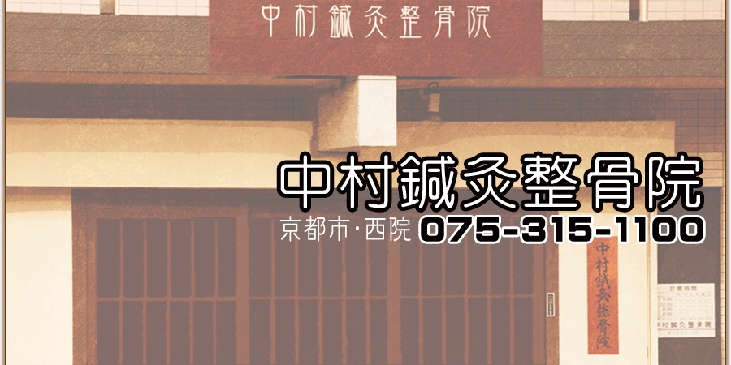
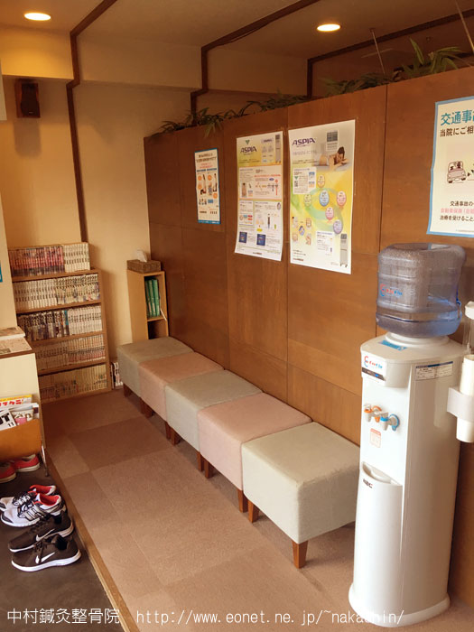
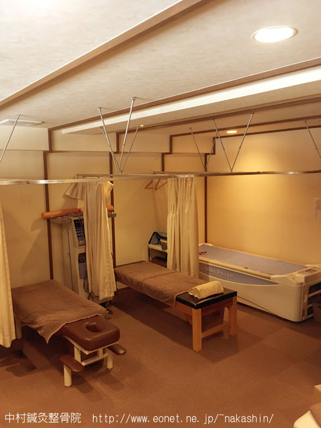

保険
各種健康保険、交通事故、労災、取り扱っております。
お気軽にご相談ください。
保険適用施術についてこのページは Biz Studio（株式会社FLCアドバンス）が作成した、リニューアルのご提案用の見本です。中村鍼灸整骨院様の公式サイトではありません。
受付時間（自費施術）予約優先
| 曜日受付時間 | 月 | 火 | 水 | 木 | 金 | 土 |
|---|---|---|---|---|---|---|
| 8:30～20:30 | ○ | ○ | ※ | ○ | ○ | ※ |
※水・土曜は１２：３０まで
中村鍼灸整骨院
NAKAMURA SHINKYU SEIKOTSUIN
受付時間（保険内施術）
| 曜日受付時間 | 月 | 火 | 水 | 木 | 金 | 土 |
|---|---|---|---|---|---|---|
| 午前8:30～12:00 | ○ | ○ | ○ | ○ | ○ | ○ |
| 午後15:30～19:30 | ○ | ○ | ☓ | ○ | ○ | ☓ |
〒615-0067 京都市右京区西院小米町11-1
TEL 075-315-1100
Instagramアカウントを開設しました。中村鍼灸整骨院 Instagram
案内

保険
お気軽にご相談ください。
保険適用施術について自費
フェイシャル
女性専用のリラクゼーションメニューを各種取りそろえております。
紹介
院長
中村 祐一
鍼灸師、柔道整復師
フェイシャル担当
中村 亜矢
柔道整復師
院内


受付
| 曜日受付時間 | 月 | 火 | 水 | 木 | 金 | 土 |
|---|---|---|---|---|---|---|
| 午前8:30～12:00 | ○ | ○ | ○ | ○ | ○ | ○ |
| 午後15:30～19:30 | ○ | ○ | ☓ | ○ | ○ | ☓ |
予約優先
| 曜日受付時間 | 月 | 火 | 水 | 木 | 金 | 土 |
|---|---|---|---|---|---|---|
| 8:30～20:30 | ○ | ○ | ※ | ○ | ○ | ※ |
※水・土曜は１２：３０まで